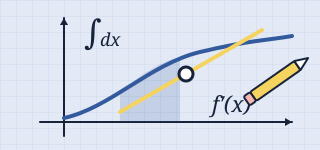
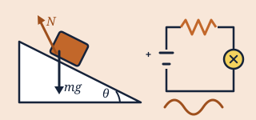
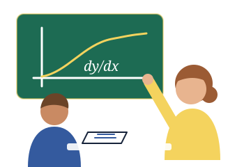

Matemáticas
De matemáticas básicas a ecuaciones diferenciales.
- Cálculo I, II y III
- Álgebra lineal
- Estadística
- Probabilidad
Tutorías de Matemáticas, Física y Química con compañeros que ya cursaron la materia. Elige tutor, cotiza y registra tu solicitud desde Telegram en menos de un minuto.
Escríbele como en cualquier chat, por ejemplo: «necesito ayuda con Cálculo I». Los enlaces abren Telegram en una pestaña nueva.
Necesito ayuda con Cálculo I
Te puedo conectar con Laura Gómez: explica derivadas paso a paso. $19.800 la hora, comisión incluida.
Quiero 2 horas con Laura
Revisa tu solicitud: 2 horas con Laura, total $39.600. ¿La registro?
Sí, registrar
Solicitud SOL-0007 registrada. Estado: pendiente de aprobación.
Todo ocurre en un chat con Tuti. Los precios los calcula el sistema con la tarifa oficial de cada tutor.
Abre un área o el perfil de un tutor. El botón te lleva a Telegram con tu elección ya cargada.
Escríbele a Tuti como en cualquier chat. Pregunta horarios o temas y conoce el total sin registrar nada.
Di cuántas horas quieres, confirma y recibe un consecutivo como SOL-0007. En Mis solicitudes ves su estado.
¿No sabes qué tutor elegir? Entra por el área y Tuti te recomienda según tu asignatura y tu horario.

De matemáticas básicas a ecuaciones diferenciales.

Mecánica, electromagnetismo y termodinámica con ejercicios resueltos.
General, orgánica e inorgánica, con ejemplos de la vida diaria.
Cada tutor ya cursó y aprobó la materia que enseña, y su postulación fue validada. El precio incluye el 10 % de comisión de Mi Tutor.
Ningún tutor coincide con esa búsqueda. Prueba otro día u otra modalidad, o escribe la asignatura con otras palabras.
Cada solicitud queda guardada con su consecutivo, aunque cierres Telegram. El equipo de Mi Tutor la revisa con el tutor y tú consultas el resultado cuando quieras.
Mientras siga pendiente, puedes cancelarla: toca Cancelar solicitud en el chat, escribe el consecutivo y confirma.
Si tu duda no está aquí, pregúntale a Tuti en Telegram.
Cada tutor define su precio por hora, entre $15.000 y $20.000. A ese valor se suma la comisión del 10 % de Mi Tutor. Por ejemplo, 1 hora con un tutor de $18.000 cuesta $19.800.
Horas enteras, hasta lo que dure el horario que elijas: si el tutor atiende «Lun 3–6pm», puedes pedir de 1 a 3 horas ese día. El total es horas × (precio por hora del tutor + 10 %).
Depende del tutor: algunos solo dan clases virtuales, otros solo presenciales y otros ambas. La modalidad aparece en cada perfil.
Estudiantes universitarios que ya cursaron y dominan la materia. Su postulación se valida antes de aparecer en Mi Tutor.
Sí, mientras esté pendiente. En el chat toca Cancelar solicitud, escribe el consecutivo (por ejemplo SOL-0007) y confirma con Sí.
Mi Tutor es un prototipo académico y por ahora no procesa pagos en línea. La solicitud registra la tutoría y su valor para que el equipo la revise.
Postúlate como tutor. Tú defines tu precio, tu horario y si das clases virtuales o presenciales.

Tu opinión nos ayuda a mejorar Mi Tutor. Esta es una prueba académica: no implica pagos ni tutorías reales.
Son 8 preguntas cortas. No pedimos nombre, correo ni teléfono.